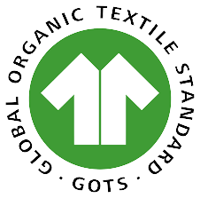
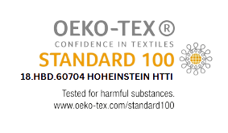
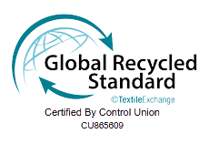
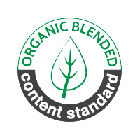
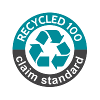
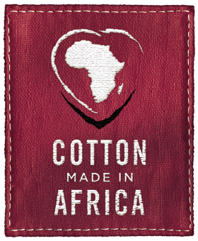

Mosharaf Group is one of the Leading International Trading, Commerce & Industrial House of the Country, established in 1993. The Group involves in producing & marketing of 100% Cotton Yarn, Carded Yarn, Combed Yarn, Slub Yarn, PC Yarn, CVC Yarn, Melange Yarn, O E Yarn, Recycle Yarn for Knit & Oven Garments, Twisting, Knitting, Fabric Dyeing, Fiber Dyeing, Finishing All Over Print, Garments Washing, Finishing, Nylon Yarn, Polyester Yarn, Fishing Net, Poultry Chick, Poultry feed, International Trading of Fertilizer, Food Grains, Coal, Textile Dyes & Chemicals, RMG, Potato Preservation, Financial Sectors: Leasing, Securities, Insurance.
Through extreme dedication and commitment to our service we have achieved the following
     
Our respected Managing Director Sir is immensely passionate about the textile manufacturing industry.His fervor for
textiles and manufacturing has been the drive behind their successful leadership in the industry.
He has a profound understanding of the industry's intricacies and has portrayed a deep-rooted passion for textiles and
manufacturing from the early days of their career. His zeal for the industry has only intensified over time, enabling
them to become a respected authority in the field.
Our Sir's passion for textiles and manufacturing has been the underpinning of their leadership style. They
pride themselves on leading by example and motivating their team through their unwavering enthusiasm for the industry.
Their infectious passion has inspired many to join the field and pursue their own careers in textile manufacturing.
One of the most crucial aspects of our managing director's approach is their belief in the power of teamwork. They
recognize the importance of a collaborative approach to achieve success and encourage a supportive work environment that
fosters innovation and creativity.
Our respected Managing Director Sir is immensely passionate about the textile manufacturing industry.His
fervor for
textiles and manufacturing has been the drive behind their successful leadership in the industry.
He has a profound understanding of the industry's intricacies and has portrayed a deep-rooted passion
for textiles and
manufacturing from the early days of their career. His zeal for the industry has only intensified over
time, enabling
them to become a respected authority in the field.
Our Sir's passion for textiles and manufacturing has been the underpinning of their leadership style.
They
pride themselves on leading by example and motivating their team through their unwavering enthusiasm for
the industry.
Their infectious passion has inspired many to join the field and pursue their own careers in textile
manufacturing.
One of the most crucial aspects of our managing director's approach is their belief in the power of
teamwork. They
recognize the importance of a collaborative approach to achieve success and encourage a supportive work
environment that
fosters innovation and creativity.